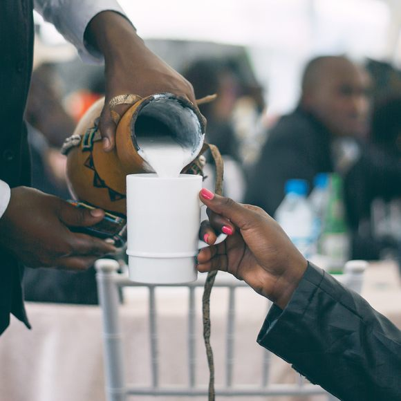

Who are the Kalenjin?
The Kalenjin are a Nilotic ethnic group indigenous to the Rift Valley Province in Kenya. They are known for their rich cultural heritage, distinct language subgroups, and remarkable athletic prowess, particularly in long-distance running.
The Kalenjin are actually a collection of related subtribes sharing linguistic and cultural similarities. Some of the major subgroups include:
- Kipsigis
- Nandi
- Tugen
- Keiyo
- Marakwet
- Pokot
- Sabaot
- Terik
Culture and Traditions
Kalenjin culture is deeply rooted in pastoralism and agriculture. Traditional practices include age-set systems, initiation ceremonies (like *Tumdo*), storytelling, music, and dance. Ugali (made from maize or millet flour) served with milk (*mursik*) or vegetables is a dietary staple.
Hover over the image for a 'fact' (Placeholder interaction).
Running Legends
The Kalenjin community has produced a disproportionately high number of world-class middle and long-distance runners. This phenomenon is often attributed to factors like high altitude living, genetics, diet, and a culture that values endurance.
Famous names like Eliud Kipchoge, Kipchoge Keino, Faith Kipyegon, and Brigid Kosgei are testament to this legacy.